Коротко о гайде
СлушатьГоворитьПонимать
Гайд о том, как учить английский короткими занятиями. Внутри план на неделю, проверка навыков и три шага, которые держат ритм.
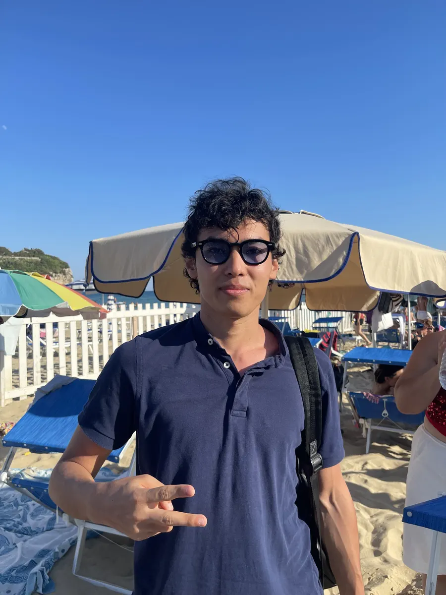
Короткие занятияОтвет сразу0:13 мин
Немного слушать, говорить, читать и писать каждый день.
О гайде01
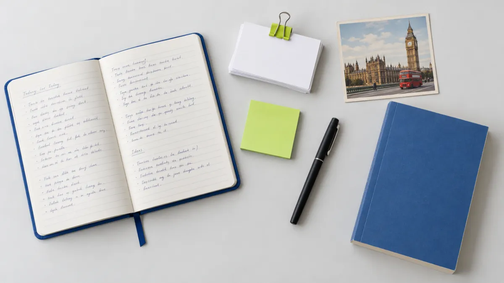
Этот гайд собирает занятия в систему, чтобы английский держался в голове дольше одной недели. Внутри план, проверка навыков и разбор частых ошибок.
20 минв день на старте
7 днейв планере недели
4 навыкаслушать, говорить, читать, писать
3 шагаот первой фразы к привычке
Что подойдёт для занятий
- Сериалы
- Подкасты
- Книги
- Приложения
- YouTube
- Диалоги
Почему бросают и что делать вместо этого.
Три причины, из-за которых английский откладывают. Для каждой есть простое решение.
Что мешает
Что делать
01
Учишь списки слов
Через неделю половина забыта.
01
Фразы из ситуаций
Целиком, как говорят: Could I get the bill, please?
02
Ждёшь, когда будешь готов
Речь откладывается на месяцы.
02
Говоришь с первого дня
Вслух, хотя бы одну фразу: I’m learning English.
03
Занимаешься по настроению
Ритма нет, прогресс не виден.
03
20 минут по плану
Короткое занятие проще не пропустить.
От первой фразы к привычке в три шага.
Сначала понять, где ты сейчас. Потом найти время. Потом держать ритм и видеть результат.
Всё, что нужно для занятий по 20 минут.
Шесть простых приёмов. Каждый можно начать сегодня и ничего не покупать.
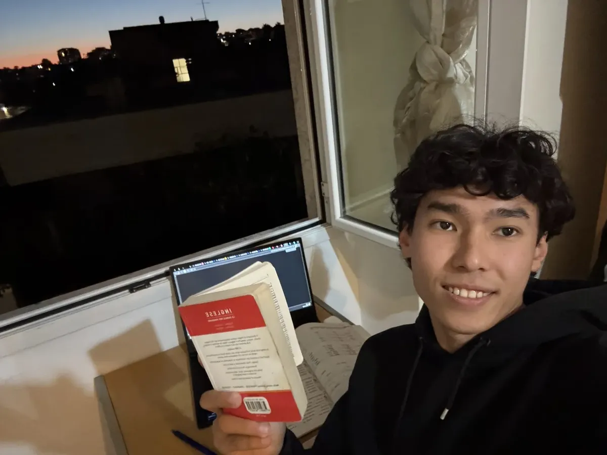
Дом, дорога, кафеУчись там, где удобно
У окна, в дороге, за кофе. Двадцать минут находятся почти везде.
Свой порядок тем
Начинай с того, что нужно сейчас: поездка, работа, экзамен или сериалы.
ПоездкаРаботаЭкзаменСериалы
Проверка сразу
Ответил, сверил, понял ошибку. Пока помнишь, почему ответил именно так.
Сверяй ответ сразу после задания
Прогресс по неделям
Отмечай занятия и смотри, как растёт ряд.
Вопросы в одном месте
Записывай непонятное сразу, чтобы потом найти ответ или спросить.
Как сказать «я уже был здесь»?
I’ve already been here.
Учиться вдвоём
С другом проще держать ритм: договоритесь о времени и проверяйте друг друга.
Пара на неделю
Когда у тебя есть 20 минут.
Нажми на клетки, когда точно можешь заниматься. Планер запомнит выбор в этом браузере.
Моя неделя
Выбери времяПнВтСрЧтПтСбВсУтроОбедПосле работыВечерПеред сном
Отмечено 0 из 35. Для начала хватит четырёх или пяти занятий в неделю.
Цели
- Понимать, а не заучивать
- Заниматься по 20 минут
- Говорить на простые темы
Что мешает
- Длинные видео без практики
- Ошибки видны только на экзамене
- Непонятно, есть ли прогресс
Твой профиль навыков.
Отметь уровень от 1 до 5 для каждого навыка. Самый слабый навык подскажет, с чего начать.
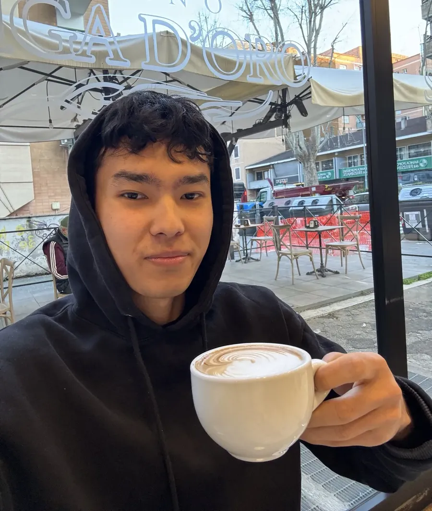
Сильный навык ЧитатьНачать с ГоворитьСредний уровень 2,8
Твой профиль
Обновляется, пока ты отмечаешь уровни
Профиль
СлушатьГоворитьЧитатьПисатьСловаГрамматика
Начни неделю с навыка «Говорить». Сильная сторона «Читать» поможет: бери материалы, где оба навыка вместе.
«If you practise, you will remember.»
Из гайда Диаса по Conditionals. Это, кстати, First Conditional.
Английский дальше вместе с Диасом
Этот гайд одна тема. В Dias English так же разобраны темы от A0 до C1. Покупать курс вслепую неприятно, поэтому ниже экскурсия: восемь настоящих экранов, как их видит ученик.
01
УровниОт A0 до C1, у каждого своя дорожная карта02
Грамматика210+ гайдов по темам03
Цена30 €04
ДоступОдин раз и навсегда, в NotionКак курс выглядит внутри.
Настоящие скриншоты с ноутбука и телефона. Подписи взяты из описания курса.
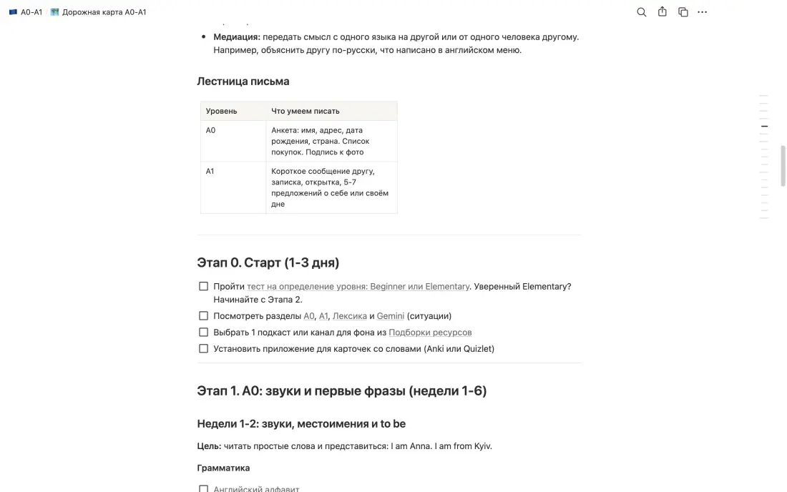
A0-A1 · этапыЭтапы по неделям
Чек-лист на каждый этап. В конце тест: больше 60%, идёшь дальше.
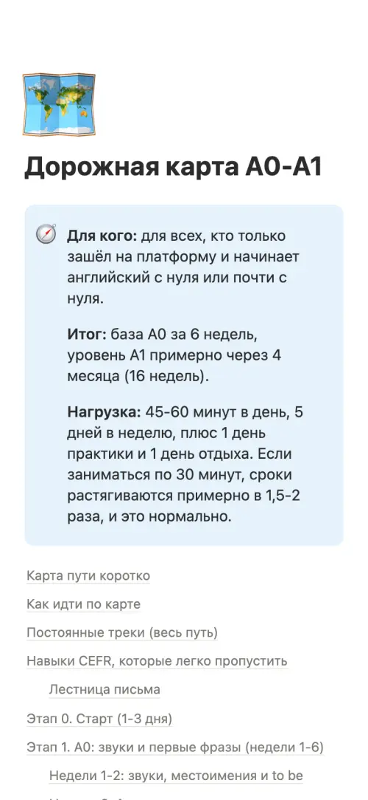
ТелефонДорожная карта с телефона
Для кого уровень, итог и нагрузка: 45-60 минут в день, 5 дней в неделю.
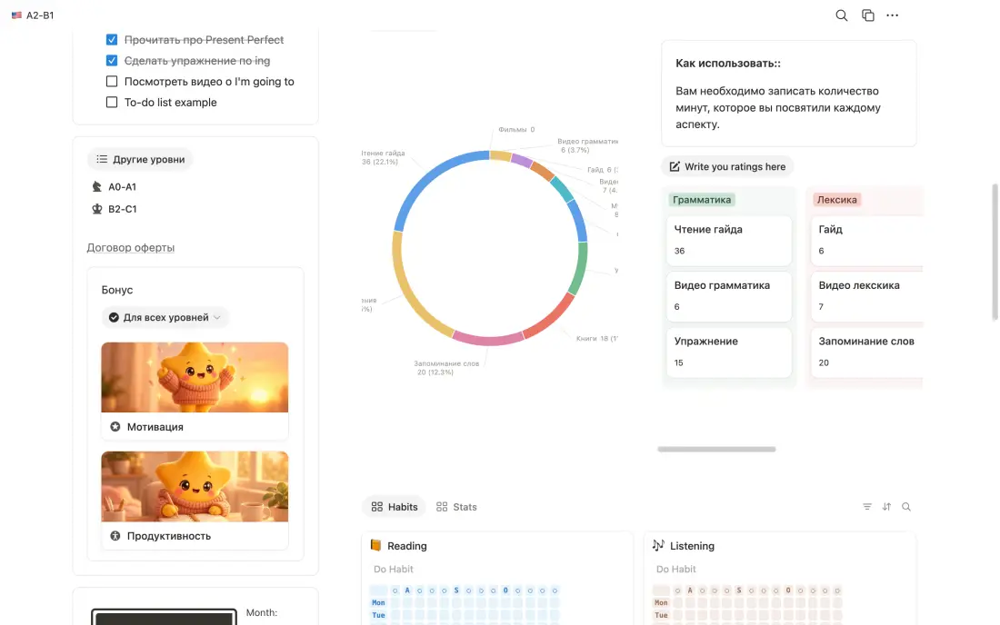
A2-B1 · главнаяГлавная уровня
Навигация по разделам, подборка ресурсов и таймер.
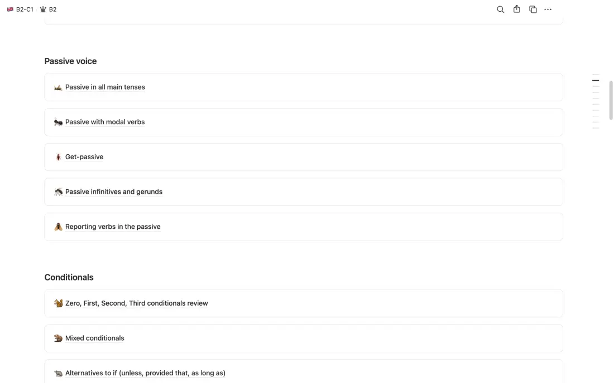
B2 · грамматикаГрамматика по темам
Гайды по темам для каждого уровня. Всего их 210+.
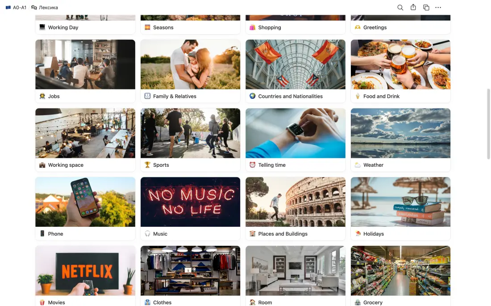
LexikaLexika
Слова по темам с картинками: работа, еда, погода, покупки, путешествия.
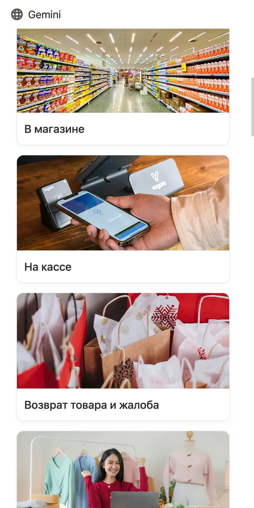
GeminiGemini
Ситуации для разговора с ИИ: магазин, касса, аптека, врач.
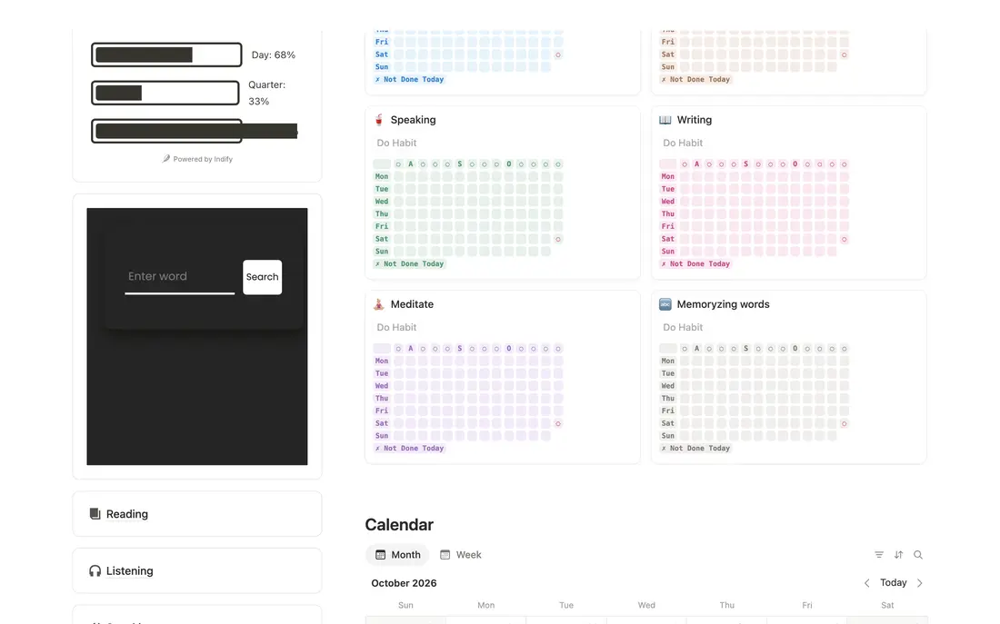
ТрекерТрекер и привычки
Сколько минут ушло на грамматику, лексику и чтение, и отметки привычек по дням.
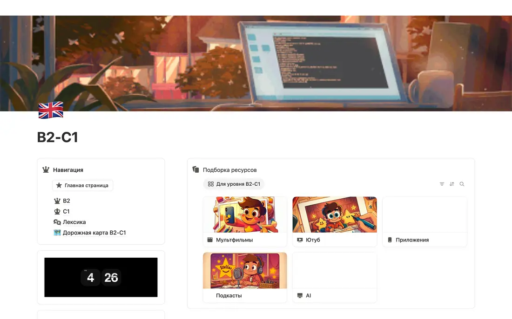
Главная курсаВсё в одном месте
Все уровни и разделы в Notion. Открывается с телефона и ноутбука.
Купить доступ · 30 €Один платёж открывает все уровни.
Для кого и с какого уровня.
Кому подойдёт
- Школьникам перед НИШ и экзаменами
- Тем, кто едет учиться за границу
- Тем, кто учил годами и всё ещё молчит
По уровням
- A0-A1: с нуля до первых диалогов в магазине, кафе и аэропорту
- A2-B1: говоришь просто и хочешь свободно
- B2-C1: учёба, работа и споры на английском
Один платёж, доступ навсегда.
Курс Dias EnglishУровни A0 до C1Где Notion
Диас
Казыгурт, НИШ, Sapienza в Риме
Курс собран как карта, которой мне самому не хватало: что учить сегодня и что завтра.
Dias English
Все уровни
30 €один раз
- Дорожные карты A0-A1, A2-B1, B2-C1
- 210+ гайдов по грамматике
- Словарь Lexika: 170+ гайдов с озвучкой
- Практика с ИИ в Gemini
- Трекер привычек, календарь, таймер
- Архив: 700+ книг, фильмов, аудио и экзаменов
Преподавателя нет: это самостоятельная платформа. Подписки нет.
Спасибо, чтодочитал!
Дальше по карте с Диасом
Dias English: A0 до C1, 30 € один раз, доступ навсегда.